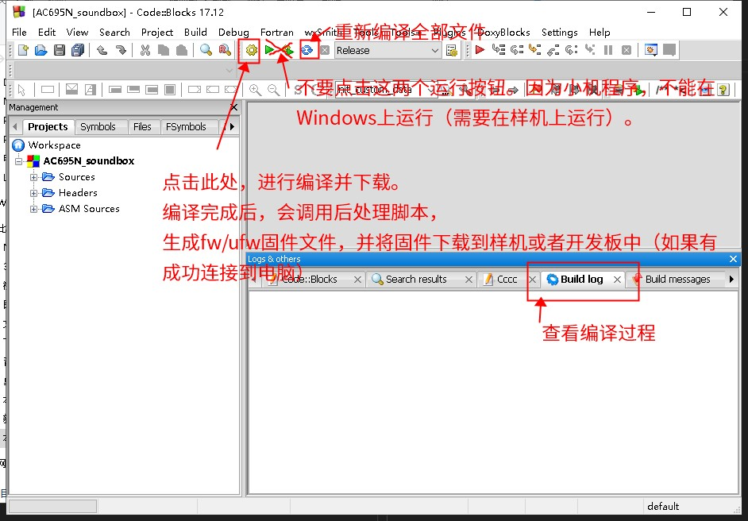

2.1. Building with Code::Blocks
By default, SDKs are released as Code::Blocks projects (that is, files with the .cbp extension).
2.1.1. Steps to build the SDK with Code::Blocks
Building with Code::Blocks takes two steps. The AC695N SDK is used as an example below:
2.1.1.1. Open the cbp project in the SDK directory
As shown below:

2.1.1.2. Connect the development board (device) to the PC with the Forced Upgrade Tool
Connect the female USB connector of the Forced Upgrade Tool to the computer and the male USB connector to the device or development board. (Be careful not to connect them the wrong way round; see the figure below.)

For details, see Upgrading and Downloading
2.1.1.3. Click the [Build] or [Rebuild] button
As shown below:

Important
Do not click [Run] or [Debug]. These two buttons make Code::Blocks try to run the target device's firmware on the current Windows machine. Because the target device's firmware is not a Windows executable, this causes an error.
Click the [Build] button. After Code::Blocks builds successfully, it calls the download.bat post-processing script in the download directory to download the firmware to the development board (device). You only need to click [Build].
2.1.2. Common issues
Note
If you run into problems while using Code::Blocks, see Common Errors, which lists common problems and how to handle them.
If the build reports errors, see Common Issues and Solutions
If downloading the firmware reports errors, see Why Can't the Program Be Downloaded?